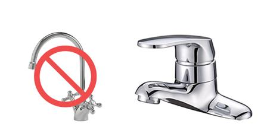
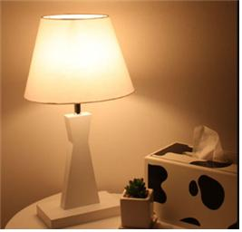

핸드레일
신체가 노화되며 약해진 부모님께는 굉장히 큰 위험 요소일 수가 있습니다. 더욱이 우리가 부모님 집에서 매일매일 거주하지 않거나 부모님과 보내는 시간이 짧을수록, 우리는 이러한 위험 요소들을 처음부터 제대로 케어 할 필요가 있습니다. 나이가 드신 분들께서 항상 주의하셔야하는 공간이 있는데, 이는 바로 욕실입니다.
물기로 인한 미끄러짐으로 인한 사고가 빈번하기 때문에, 가장 좋은 방법으로는 계단, 욕실, 침대 옆, 발코니, 주방 의 자주 이용하는 공간에 핸드레일을 설치하여 미끄럼과 헛디딤을 방지하는 것입니다.

수도꼭지
수도꼭지의 경우에도 밸브 방식보다는 레버로 된 수도꼭지를 사용하면 수온과 수량을 조절하는데 더욱 편리합니다.
슬라이딩 도어
나이가 들수록 우리는 손에도 힘이 없어진다. 젊을 때는 악력이 있었어도 나이가 들면 신체가 노화하며 자연스레 손아귀의 힘도 없어지기 마련입니다.
또한, 이미 앞서 언급하였듯 거동 또한 불편해지기 때문에, 우리가 아주 쉽게 열고 닫을 수 있는 밀고 당기는 형태의 문일지라도 연로하신 부모님께는 은근히 불편함을 느끼실 것입니다. 손에 힘이 없으셔서 손잡이를 꽈악 눌러 당기거나 문을 밀고 당기실 때 발걸음을 옮겨 문이 살짝 닫는 것이 힘드셔서 쾅하는 소리와 함께 문이 닫히지 않도록 개폐가 쉬운 슬라이딩 도어를 통해 간편함을 줄 수 있습니다.

D형 손잡이
나이가 들면 악력이 적어지기에 창고, 사물함 등 사용되는 문을 슬라이딩 도어로 사용하여도 좋지만 그게 없다면 손잡이가 D모양으로 된 D형 손잡이를 사용하면 악력을 적게 쓰며, 손쉽게 사용할 수 있습니다.

스탠드/다운라이트
어르신들은 밤에 수시로 깨시고 눈에 피로가 심하기 때문에 조명 밝기에도 신경을 쓰는 것이 좋습니다. 그 방법으로는 평소보다 2~3배 밝은 조명을 사용하는 방법입니다. 조명의 강약을 쉽게 조절할 수 있는 스탠드나 다운 라이트를 사용하면 눈에 피로도를 조금이라도 줄일 수 있습니다.
